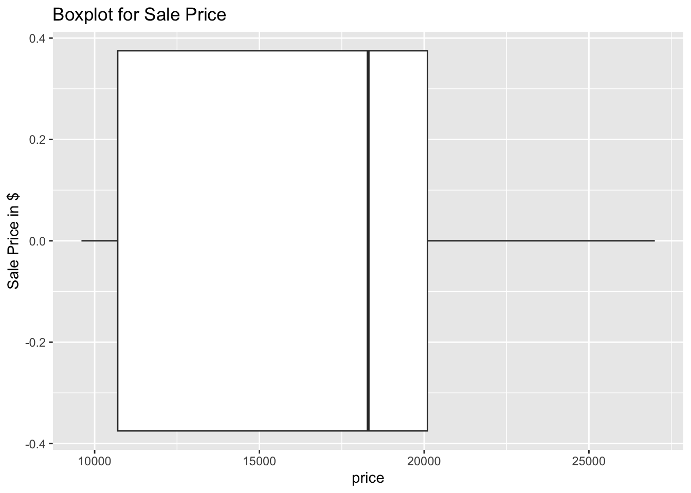
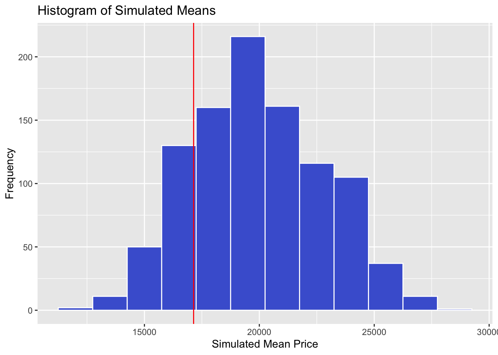
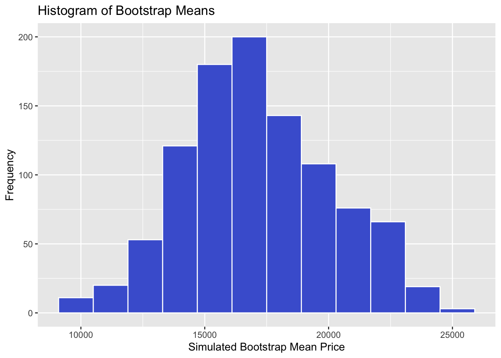

Code
sales_data <- tibble(price = c(18300, 20100,
9600, 10700, 27000))In this lab, we consider statistical inference for a single mean. Scenario that fall under this category include those where we are interested in learning about the average value of a numerical variable for a population.
Go to posit cloud (https://posit.cloud) and open the MATH 144 project. Once your MATH 144 project is open, clean up the console and the environment. Close any open documents and datasets that you don’t need.
Next, create your new quarto file as follows:
File > New File > Quarto document. Use the file name Lab_9. Do not delete the .qmd extension.
Add the author and title keys to the YAML section. Write your name (in quotes) in the author field and set the title to Inference for a Single Mean.
Change the output option to pdf then click on render. A PDF document with your name and title should pop up. If the popup blocker shows up, click try again.
Awesome Auto Car Company (AACC) is a big auto sales company with several franchises. AACC claims that the average sale price of cars at one of its franchises is $20,000. A small company is considering acquiring the franchise and wants an independent evaluation of this claim before moving forward. You are hired as a consultant to assess the claim using statistical inference. As a first step, you collect a random sample of five cars from the franchise and record their sale prices (in US dollars), as shown below:
\[18300, 20100, 9600, 10700, 27000\]
Load the tidyverse and infer packages:
library(tidyverse)
library(infer)We will not pull the data from an external source. Instead, we will create the dataset using the tibble() function as shown below:
sales_data <- tibble(price = c(18300, 20100,
9600, 10700, 27000))After running the code, a new object named sales_data will pop up in your environment. Click on it to open it and examine the cases and variables. This is the data we will use.
We want to answer the following two research question via statistical inference:
Research Question 1: Is there enough evidence to suggest that the average car sale price at the said franchise is different (less than) from $20,000?
Null Hypothesis: The average car sale price is not different from$20,000. \[H_0: \mu = 20,0000.\]
Alternative Hypothesis: The average car sale price is less than $20,000. \[H_a: \mu \neq 20,000.\]
Note: To answer this research question, we will use the price variable from the sales_data we created.
It is a common practice to run various summary statistics and create visualizations to explore the data before running inference. We have done data visualization in previous labs but here we will just make a box plot.
sales_data |>
ggplot(aes(x = price)) +
geom_boxplot() +
labs(title = "Boxplot for Sale Price",
y = "Sale Price in $")
Describe the distribution of the price variable based on the boxplot above. Are there any outliers? What is the median sale price? What is the estimated interquartile range (IQR)?
The observed statistic is the average (mean) sale price based on the sample. We can calculate it using the code below:
sales_data |>
summarize(average = mean(price))# A tibble: 1 × 1
average
<dbl>
1 17140Next, we want to run simulations to see the distribution of the observed statistic under the assumption that the null hypothesis is true. We will use the infer package to do this. Examine the code below before running it.
set.seed(123) # Prevents simulated data from changing.
null_distribution <- sales_data |>
specify(response = price) |>
hypothesize(null = "point", mu = 20000) |>
generate(reps = 1000, type = "bootstrap") |>
calculate(stat = "mean")A new object named null_distribution should appear in the environment area. This it contains 1000 simulated means. We can visualize the null distribution using a histogram and also indicate the location of observed statistic. See code below:
null_distribution |>
ggplot(aes(x = stat)) +
geom_histogram(binwidth = 1500, fill = "#4963D4", color = "white") +
geom_vline(xintercept = 17140, color = "red") +
labs(title = "Histogram of Simulated Means",
x = "Simulated Mean Price",
y = "Frequency")
The red line represents the observed statistic of 17140 dollars. Notice that the observed statistic is located in the left tail of the null distribution, which is consistent with our alternative hypothesis that the average sale price is less than 20,000 dollars. To find the P-value, we need to calculate the proportion of simulated means that are as extreme as or more extreme than the observed statistic (17140 dollars) in the direction specified by the alternative hypothesis (less than). We can achieve this easily the get_p_value() function from the infer package. See code below:
null_distribution |>
get_p_value(obs_stat = 17140, direction = "less")# A tibble: 1 × 1
p_value
<dbl>
1 0.193The p-value is 0.193 (about 19.3%). This represents the likelihood of obtaining an average mean of 17,400 or less assuming that the null hypothesis were true. Since the p-value is greater than the discernibility level of 0.05 (5%), we fail to reject the null hypothesis. Our data does not provide enough evidence to suggest that the average sale price at the franchise is different (less than) 20,000 dollars.
Next, we want to create a confidence interval to approximate the range within which we expect to find the true average sale price. We first run several bootstrap samples from the original sample as shown below. Study this code and note how it differs from the one used for hypothesis testing above.
set.seed(1234) # Prevents simulated data from changing.
bootstrap_dist <- sales_data |>
specify(response = price) |>
generate(reps = 1000, type = "bootstrap") |>
calculate(stat = "mean")We can visualize the bootstrap distribution using a histogram. This step is often optional but it can be a good way to verify that your interval is centered around the observed statistic:
bootstrap_dist |>
ggplot(aes(x = stat)) +
geom_histogram(binwidth = 1400, fill = "#4963D4", color = "white") +
labs(title = "Histogram of Bootstrap Means",
x = "Simulated Bootstrap Mean Price",
y = "Frequency")
Notice that the histogram is centered around the observed statistic of $17,140 pounds. Recall that the null distribution was centered around the null value of $20,000. The bootstrap distribution is used to create confidence intervals while the null distribution is used for hypothesis testing.
Next, we can use the get_ci() function to find the lower and the upper boundaries of the 95% confidence interval as shown below:
bootstrap_dist |>
get_ci(level = 0.95)# A tibble: 1 × 2
lower_ci upper_ci
<dbl> <dbl>
1 11780 22860The 95% confidence interval is approximately ($11,780, $22,860). This means that we are 95% confident that the true average sale price is between $11,780 and $22,860. This interval includes the null value ($20,000), meaning $20,000 is a plausible value. This further supports the conclusion reached under the hypothesis testing part.
There are no questions to answer. Render your quarto document and submit the PDF to Canvas under Lab 9.